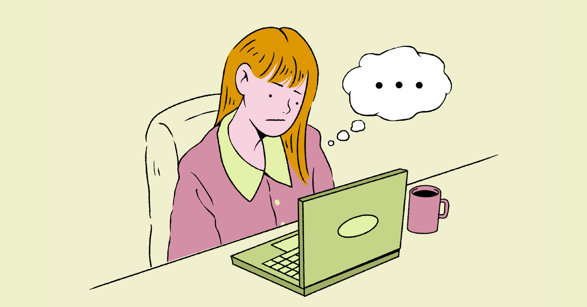

An Empirical Study on Why Restarting the Computer Magically Solves 92% of All Issues
Posted On 13 November 2025
Posted On 13 November 2025
Posted On 29 November 2025
Posted On 12 November 2025
Posted On 23 September 2025
Posted On 11 September 2025